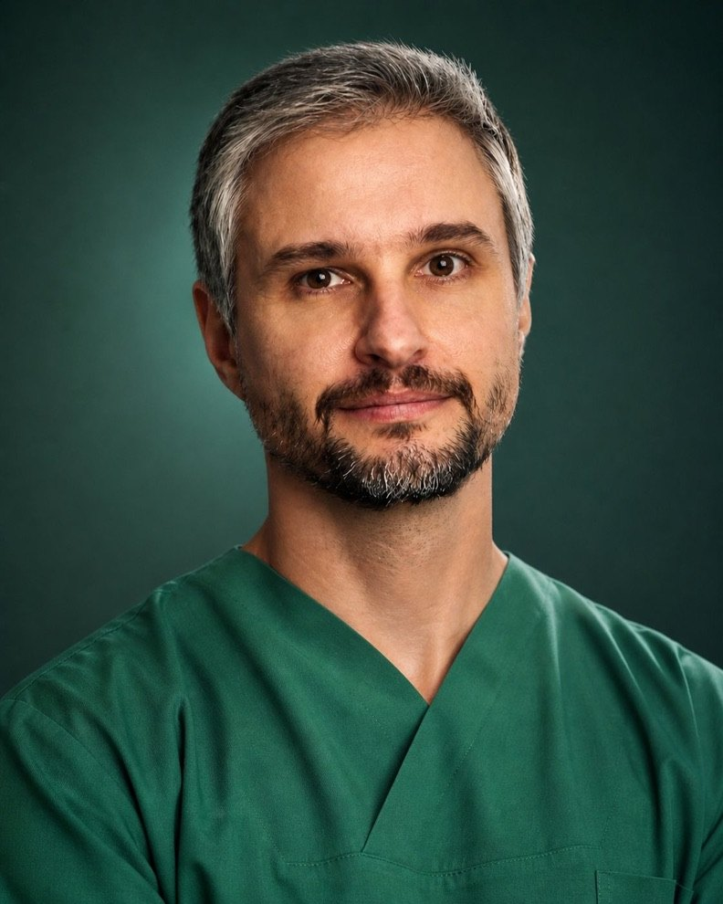
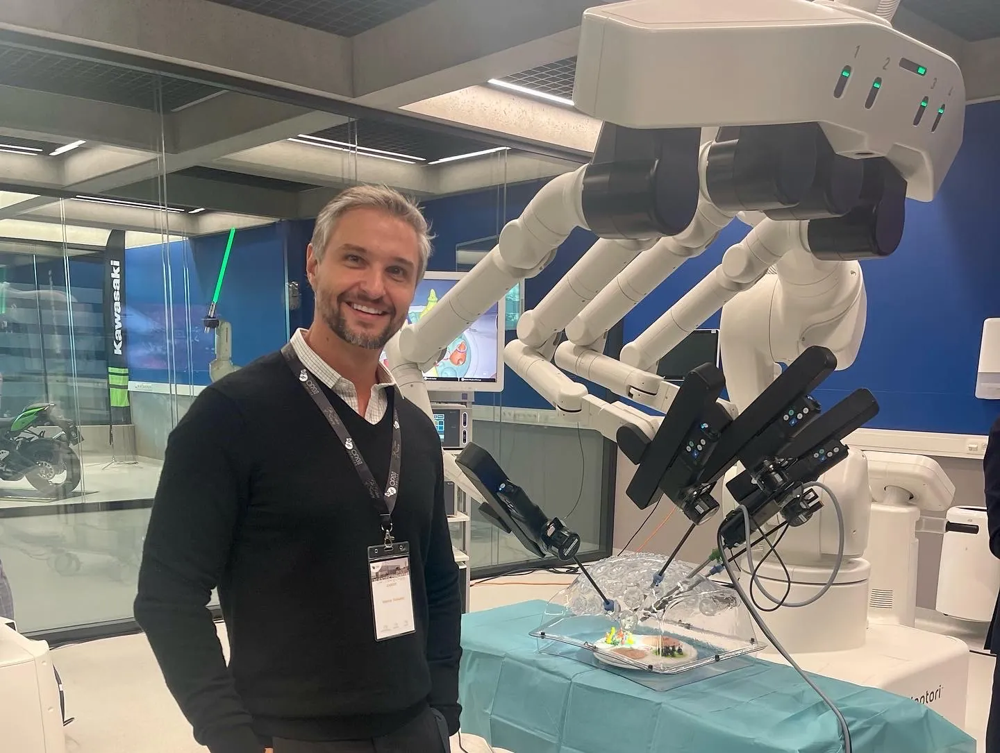

Graduação em Medicina — Universidade Federal de Ciências da Saúde de Porto Alegre
Dr. Marco Antônio Corsetti
Sobre mim — Dr. Marco Corsetti, urologista no Rio de Janeiro
Dr. Marco Corsetti — CRM 52.94351-7 · RQE 31969 (Urologia)

Trajetória
Minha jornada médica é moldada por um comprometimento inabalável com a excelência e o aprimoramento contínuo. Graduado pela renomada Universidade Federal de Ciências da Saúde de Porto Alegre, solidifiquei minha base acadêmica e iniciei uma trajetória marcante na medicina.
A residência em Cirurgia Geral no Hospital de Clínicas de Porto Alegre e, posteriormente, em Urologia no Hospital dos Servidores do Estado do Rio de Janeiro, uma referência nacional em procedimentos urológicos, foram etapas cruciais na minha formação. Essas experiências não apenas aprimoraram minhas habilidades técnicas, mas também moldaram minha abordagem integrada, garantindo um olhar abrangente e humanizado no cuidado com os pacientes.
Minha paixão por conhecimento e aperfeiçoamento me levou a participar ativamente de cursos, congressos e treinamentos internacionais. Essa busca constante pela vanguarda da medicina reflete diretamente nos serviços que ofereço aos meus pacientes, sempre com o objetivo de proporcionar tratamentos inovadores e eficazes.
Como profissional dedicado, estou vinculado aos melhores hospitais do Rio de Janeiro, além disso, mantenho atendimentos em dois consultório na Barra da Tijuca, assegurando uma abordagem ampla, acessível e de qualidade.
Meu compromisso é oferecer um atendimento personalizado, utilizando as mais avançadas tecnologias e técnicas disponíveis, como a cirurgia robótica e tratamento minimamente invasivo. Estou aqui para garantir que cada paciente receba o melhor cuidado possível, com segurança, eficiência e empatia.
Formação
Trajetória
Residência em Cirurgia Geral — Hospital de Clínicas de Porto Alegre
Residência em Urologia — Hospital dos Servidores do Estado do Rio de Janeiro
Certificação em cirurgia robótica
Fellowship — OLV - Onze-Lieve-Vrouwziekenhuis + ORSI Academy, Aalst/Melle
Atendimentos em dois consultórios na Barra da Tijuca e em Ipanema


2015 · Aalst/Melle, Bélgica
Especialização em cirurgia robótica
Como especialista em cirurgia robótica, minha dedicação à inovacao é refletida em uma trajetória marcada por conquistas notáveis. Obtive a certificação em cirurgia robótica em 2015, marcando o início de uma busca incessante pela maestria nesse campo.
Destaco meu fellowship em um dos maiores centros mundiais dessa técnica, localizado na Europa - OLV - Onze-Lieve-Vrouwziekenhuis + ORSI Academy, em Aalst/Melle, Bélgica. Essa experiência intensiva ampliou minha perspectiva e refinou minhas habilidades, proporcionando uma imersão no que há de mais avançado na cirurgia robótica.
Minha formação nesse renomado centro europeu não é apenas um certificado, mas um compromisso contínuo com a vanguarda da cirurgia robótica. Estou empenhado em aplicar essa expertise em cada intervenção, garantindo aos meus pacientes benefícios concretos e resultados excepcionais.